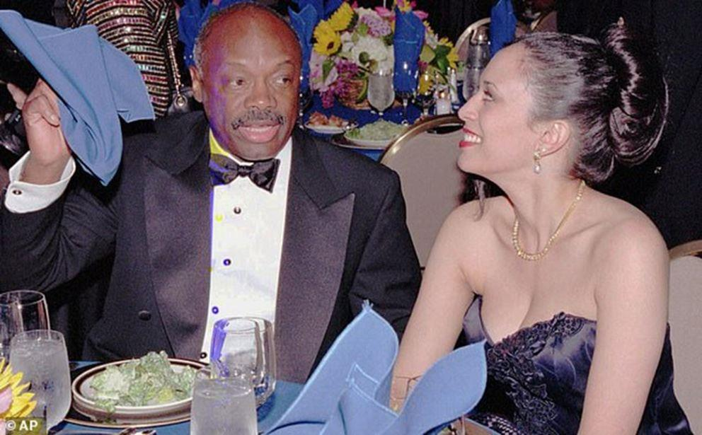

Journaux et télévisions nous déjà ont amplement vendu la nouvelle vice-présidente des États-Unis, là-bas comme ici, une personne qui serait donc le futur de ce grand pays, et peut-être même de la nouvelle humanité en devenir. Essayons-nous à quelques commentaires pour peut-être s’extraire de cette belle unanimité.
Dans un pays d’outre-Atlantique conditionné depuis des années aux exploits d’héroïnes féminisées et de race indéfinie (Mula, Moana, Pocahontas) il n’est finalement que suite logique de voir arriver aux responsabilités un personnage aux contours ethniques assez flous, à même de ratisser large et d’attirer les sympathies, voire l’identification, du plus grand nombre.
Les héroïnes des films précités illustrent à merveille ce métissage à la croisée du monde asiatique, mexicain, caribéen (les Américains disent « Asian », ce qui est un fourre-tout bien commode pour un ou deux milliards de personnes – mais aussi « ethnic » pour tous les styles un peu zoulous-peuls et enfin « latino » pour tout ce qui est un peu bronzé mais pas encore africain (Sud-américains, Espagnols, Italiens même, bientôt Français ?)
L’important est de plaire pour assurer les rentrées cinématographiques, seule jauge de la valeur d’une œuvre : on se contorsionnera ainsi pour faire un Pearl Harbor sans Japonais (eh oui, ils représentent une part importante du public) avec donc juste des avions de méchants démarqués qui dégringolent du ciel. On n’aura pas ces pudeurs pour d’autres : néfastes Russes, vilains Sud-africains blancs, Français de temps en temps, certains "mauvais" ont le droit à l’étiquetage. Dans les studios d’animation, des algorithmes savants modèlent pommettes, sourcils et couleur de peau de façon à plaire au plus grand nombre, ne croyez surtout pas que cela soit fait au hasard… on arrive ainsi à ne plus très bien savoir qui est qui, ce qui est somme toute logique dans un pays pionnier en matière de confusion des genres, où le combat pour la liberté et les valeurs universelles imposées au reste du monde, se limite de plus en plus à la promotion du trans-genrisme (l’homosexualité simple n’étant déjà plus assez clivante, juste un combat déjà daté de la génération précédente)
On constate alors sans surprise le choix de sa chef de cabinet, une version enrichie d’elle-même, la supposée francophone Karine Jean-Pierre dont on entendra parler encore longtemps (Haïtienne née en Martinique, elle a ensuite habité Paris avant de partir pour New York à l’âge de cinq ans, ce qui lui a suffi pour décréter que la France qu’elle avait connue était un horrible pays raciste…)
Se rajoute à tout cela le goût immodéré des Américains pour les opérations de chirurgie esthétique, qui leur fait mépriser quelqu’un qui n’est pas été refait dans une demi-douzaine de ses composants plus ou moins intimes.
On se demande d’ailleurs pourquoi on se glorifiera de la promotion de certains, dont on fera un étendard, alors que cette même personne n’aura eu de cesse, à coup de crème à éclaircir et de traitement défrisant, de gommer le plus possible de ce pourquoi elle a finalement été promue, et dont elle est supposée être fière. Remarquons au passage que les techniques de traitement d’images qui permettent tant, se retournent parfois contre ceux qui sont supposés en bénéficier – notamment par le degré plus ou moins élevé d’éclaircissement ou d’ombre qui aura été appliqué à certains, au point que l’on a parfois du mal à les reconnaitre d’un magazine à l’autre – forçant parfois à appeler le temps à la rescousse pour justifier une différence de teint trop évidente, sous peine d’avoir à se demander s’il s’agit bien de la même personne….
Changement de teinte
Terminons avec la filmographie de là-bas pour nous gausser de ces consignes, qui imposent désormais la présence à l’écran de certaines minorités visibles… qui n’étaient malheureusement pas là au moment de l’aventure. On aura ainsi Robin des Bois, Ivanhoé, les Vikings, les guerres napoléoniennes, passés au filtre de l’indigénisme avec des personnages totalement anachroniques, et on mettra au rebut les premières versions de ces films au motif d’une diversité insuffisante. Situation navrante, qui hélas comme tout progressisme traverse l’Atlantique assez rapidement, nos faiseurs d’opinion ne s’intéressant à aucun autre pays.
Revenons donc à notre femme politique : il en fallait une, le candidat démocrate n’allait quand même pas prendre un homme blanc pour partenaire, ce n’était même pas envisageable (et que réserve demain ?) – alors on a cherché à cocher deux cases, et on a eu ce résultat. Passé le premier effet de curiosité, la nouvelle venue n’arriva ensuite qu’à totaliser plus de 3% des intentions de vote pour les primaires démocrates qui se profilaient, s’opposa plusieurs fois violemment à Joe Biden sur des questions raciales (quelle surprise) et se retira finalement de la compétition, citant officiellement un manque de fonds… pour refaire surface tout de suite après. Peut-être ses altercations avec son futur patron n’étaient-elles après tout qu’un théâtre de qualité.
Le nouveau président n’étant effectivement pas au mieux de sa forme, physique et intellectuelle, de bafouillages en lapsus, de gestes saccadés en fixités du visage, et ce depuis un certain temps, la question que tout le monde se pose dès à présent au palais, et à voix basse est : quand et comment sa déposition aura-t-elle lieu? s’agira-t-il d’un décès clair et net avec une immédiate prestation de serment de la remplaçante, d’une démission de l’intéressé comme celle de Winston Churchill bien fatigué après son retour au pouvoir des années cinquante, ou alors d’une procédure d’impeachment, à l’initiative de celle à qui cet effacement bénéficierait ("tuer le père" a été toujours été une bonne technique lors des luttes de pouvoir, de la mairie de Neuilly aux couloirs du Politbüro…) Il n’est pas sûr, et c’est le moins qu’on puisse dire, que le public démocrate – en premier – et national - en second - se satisfasse d’un scénario à la Marseillaise, que l’on a souvent comparé à l’astuce bien connue du couple d’autostoppeurs. Attendons et voyons - mais il est incontestable que c’est le plan, depuis le début de la création de cet attelage qui s’est au final révélé gagnant. Ce serait donc elle la prochaine ? L’affaire est entendue – on nous avait juste dit quelque chose de similaire en 2016, or le peuple est parfois contrariant.
Reprenons en détail la personnalité de la gagnante – dans la mesure où l’information désormais plus que verrouillée le permet. On ne s’attaquait pas à "Saint Obama" et cela devrait être un peu pareil désormais avec son équivalent féminin. On a donc affaire à une créature métissée, d’ascendances inhabituelles – pour des Européens toutefois, les Américains à la poursuite d’un antiracisme obsessionnel ayant créé (il y eut un "National Geographic" sur le sujet) une quinzaine de nouvelles sous-espèces (car chez eux, figurez-vous qu’on n’est pas raciste, on n’a pas le droit de l’être, mais on classifie cependant avec une méticulosité d’entomologiste) On a donc vu apparaitre tout à fait officiellement des "afro-natives", des "afro-mexicains", des "caribbean-americans", des "natives hawaiians", des "other pacific islanders" (eh oui, on peut être noir comme l’ébène et ne pas venir d’Afrique, mais des iles Salomon ou Andaman par exemple) des "asians" associés à des "other asians" … bref, tout ce qu’il faut pour s’intéresser à ce que sont ou seraient la peau et la race des gens, tout en prétendant ensuite ne pas y accorder d’importance…. Il est donc finalement normal dans une société où l’ethnicité tient une si grande place, d’avoir porté plus ou moins inconsciemment au pouvoir une multi hybride aux contours flous. Une mère indienne – entre parenthèse un des pays les plus discriminants au monde, où la peau claire des états du Nord assure carrières et privilèges – et un père jamaïcain franchement mulâtre – et là, il faut bien connaitre les Caraïbes, Haïti et St-Domingue, pour saisir la légère hypocrisie de cette ascendance, pour se prétendre "noir" quand on a incontestablement appartenu à la classe dirigeante de ces contrées. Et y diriger entraina pendant longtemps une certaine conception du droit du travail…. je vous laisse chercher. Le résultat est tel, qu’un Français sarcastique se demandera au vu de la photo de la candidate sur la couverture de son dernier livre, ce qu’elle peut bien avoir de cette caractéristique si mise en avant par ses thuriféraires….
toujours ratisser large
Continuons : pas d’enfants bien sûr – au temps de Greta Thunberg et d’Europe Ecologie, en avoir aurait été tellement out, tellement anti-image, qu’il faut bien cela pour assumer son progressisme – et là on remarque qu’elle est en bonne compagnie, d’Emmanuel Macron à Angela Merkel, de Teresa May aux différents premiers ministres irlandais, belges, luxembourgeois... Dans ce cas présent, ce n’est peut-être pas un mal, car avoir trop cherché à effacer ses traits ethniques, peut exposer à des surprises lors de la génération suivante, c’est bien connu (un couple princier nous en donné l’illustration récemment)
Il est dans tous les cas sûr qu’avoir plagié une anecdote de Martin Lüther King (la petite fille bafouillant à un méchant policier blanc "Feew-dom" lors d’une manifestation des droits civiques…) ne peut lui valoir d’indulgence qu’auprès des convaincus fanatiques. La trop belle légende servie au bon peuple évitera soigneusement d’évoquer la vie de l’idole, avant son mariage à l’âge respectable de 50 ans, et de se mettre à prétendre aimer les enfants de son mari comme les siens (on a ça chez nous) Avoir eu à l’âge de 29 ans une relation de deux années avec un maire de San Francisco âgé de 60 ans ne peut pas avoir nui à une carrière déjà prometteuse.

ça ne peut pas faire de mal
De célèbres journalistes tentent régulièrement ça chez nous, avec plus ou moins de succès. On refait là le lien avec un précédent paragraphe, en notant que les personnalités de cette extraction se choisissent quasi-invariablement des compagnes à la complexion moins accentuée… et on en fera l’interprétation qu’on en voudra.
Tout ceci pourrait ne pas avoir une si grande importance et rester cantonné aux pages d’une certaine presse (enfin non, on n’y trouvera justement pas tout ce qui a précédé, ne rêvons pas) C’est négliger le fait qu’après un président qui s’est enorgueilli à juste titre de ne pas avoir déclenché de guerre pendant son mandat, tout est déjà en place pour que l’équipe actuelle puisse rattraper ce retard (ça démange du côté des bombardiers…) – et donc les personnalités des décideurs ont leur importance, avec leurs non-dits et leurs fissures.
Aucune raison donc pour cette dame de sympathiser avec une Russie qui n’est vraiment pas de son monde, et dont on ne perd pas de temps à retrouver l’adresse : un timing parfait pour le retour d’un certain Navalny, avec l’objectif rêvé de rééditer les coups d’Ukraine et de Biélorussie (ce dernier plus ou moins interrompu cependant !) Nord Stream 2 et les sanctions qui s’accélèrent en fonction inverse du nombre de kilomètres de tuyaux restant à poser au fond de la Baltique, les forces supplétives des alliés qu’on persuade de se préparer aux combats de grande intensité, les mises en garde télé-promptées du nouveau président envers son homologue russe, et la reprise des bombardements du Donetsk supervisée par des locuteurs nord-américains, le camp du Bien ayant là-bas aussi toujours raison.
Un des tous premiers décrets de Joe Biden aura été de valider le retour des transsexuels dans l’Armée américaine : dira-t-on que c’est tout à fait ce dont ils avaient besoin, avant de se lancer dans une aventure de plus ? Enfin bon, qu’ils fassent la guerre, tiens - cela déjà été essayé par deux grands conquérants : l’un dormit une nuit et une seule dans la chambre du tsar, les troupes de l’autre ne firent qu’entrevoir les coupoles du Kremlin – et tout le monde rentra à pieds dans la neige, en se promettant qu’on ne les y reprendrait plus.
Il faudra convaincre leurs descendants que la prochaine sera pour la bonne cause – mais il y a les moyens pour cela.
Partager cette page